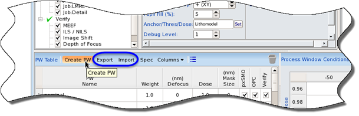

A benefit of
the RET Selection interface is that you only need to define the
process window conditions once. After they are set up in the session
browser you can add or remove them from the tool setups with the
click of a mouse.
There should be at least five process window
conditions:
Nominal
Overexposed
Underexposed
Overexposed, with roughly 1-2% more
dose than the standard overexposed
Underexposed, with roughly 1-2% less
dose and 10% more defocus than the standard underexposed
The more aggressive process conditions are
used for Calibre pxSMO, Calibre pxOPC, and Calibre nmOPC.
You can use more process window conditions
than these five. The goal is to describe the conditions that cause
the most variation in your equipment’s wafer printing. The underexposed and
overexposed should represent the two extremes. In simulation, the
two extremes are the inner and outer contours that combined form
a process variation band (PV band).
To import process window conditions (and other settings) from
an existing session, refer to “Migrating Session Settings to a New Layout/Gauge Pair”.
Prerequisites
A
layout/gauge pair and session.
Values
for minimum and maximum dose and defocus.
Values for
focus-dose pairs within the dose and defocus ranges. The number
of pairs must meet the polynomial convergence
criteria.
Whether
mask biasing needs to be accounted for.
Procedure
- If the Session Browser is
not already visible, click the Session Browser tab.
- Verify
the Name area at the top of the Session Browser area shows the session
you intend to configure. If necessary, select the session from the
list in Run Control.
- To add a process window condition,
click the Create PW button at the top of
the PW Table area.
A second row appears in the
table with default values.
Figure 1. Adding a Process Window Condition
Tip You can also reuse PW tables with Import or Export as
shown in the previous figure. The tables are saved in comma-separated
value (.csv) format.
- Fill in the values by clicking
in the table cell and entering appropriate values for your process.
At least one process window
condition should be named “nominal.”
Weight is a unitless,
relative value. The default is 1. Give a higher value such as 50
to place more importance on optimizing for that condition. Note
that having all conditions at 50 is the same as having all conditions
at 1.
Defocus depends
on the expectations for DOF of the layer. A reasonable starting
value is typically ±50 nm.
Mask size refers to mask
biasing and is in nanometers. Negative values mean the OPC mask
edge is moved toward the interior of the feature.
pxSMO, OPC, and Verify
make the process window conditions available in the respective setups.
The nominal condition should have all three setups selected.
(Optional)
If using a 3D optical model, image plane refers to the z-plane location
inside the resist film to use for aerial image simulation.
Use the Process Window Conditions matrix to visualize the coverage.
- (Optional) If adding optical aberrations, click Spec to create optical specifications
with Zernike coefficients.
- (Optional) To change the image plane interpolation,
click the PW Option icon and
select Image Plane Interpolation to
choose a new option.
Results
When you are done, you should have
a table that looks something like this: